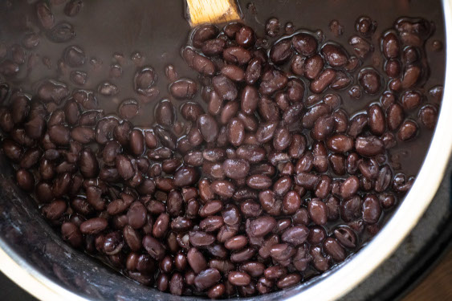

Instant Pot Beans
Return Home

Description
335 Calories and 20.7g protein per serving.
Two cups of dry black beans cooked in a 6 quart instant pot. Creates Four servings.
Ingredients
- 2 cups of dry black beans
- Enough water to fill up the pot half way
Steps
- Put the beans in the pot
- Fill up the pot to the halfway line
- Press the Beans/Chili button on the Instant Pot
- Cook on high for 45 minutes, then let it naturally depressurize
- Drain the water
- Split into four equal portions